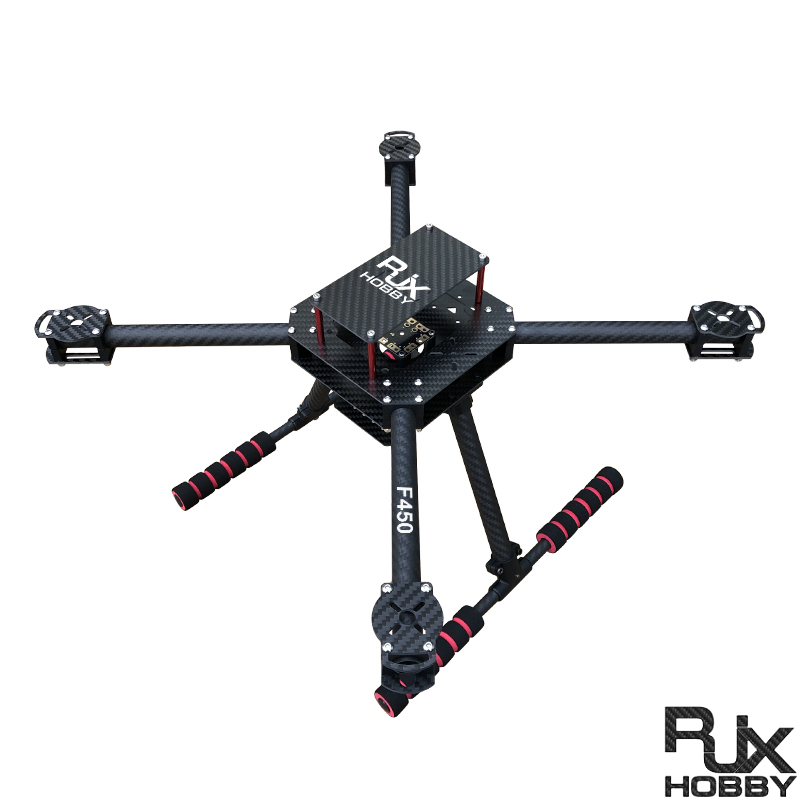
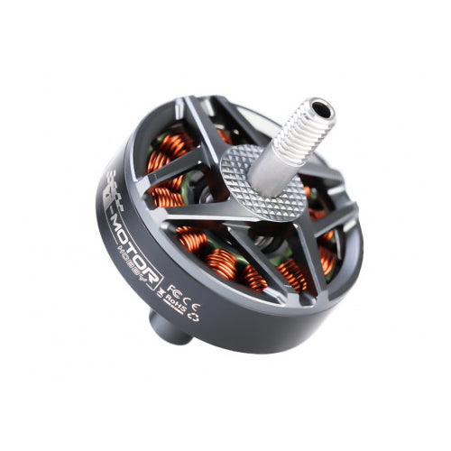
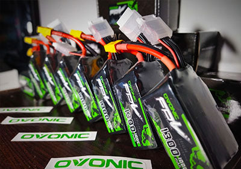
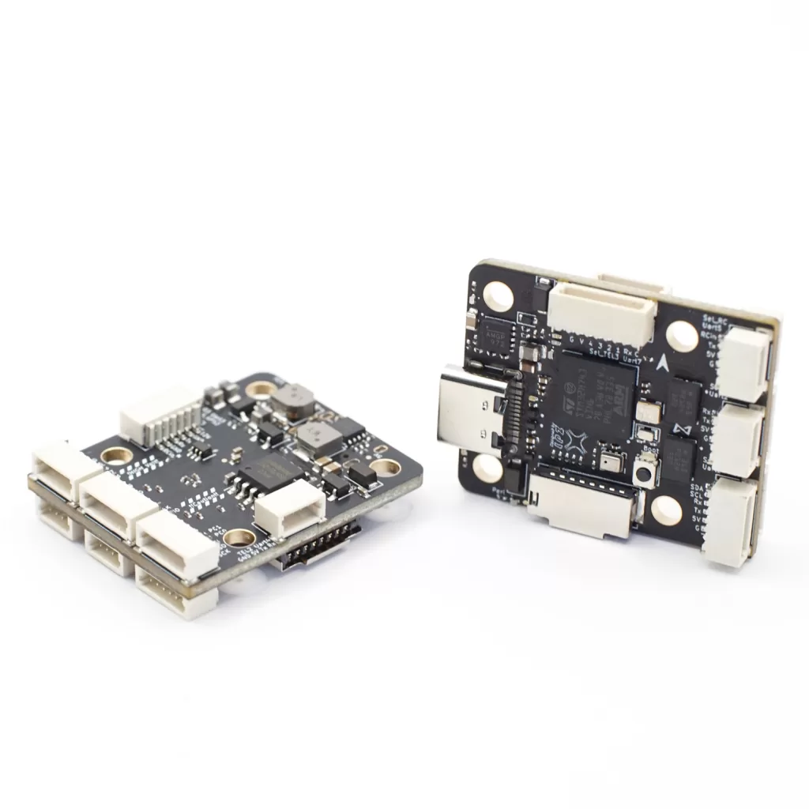
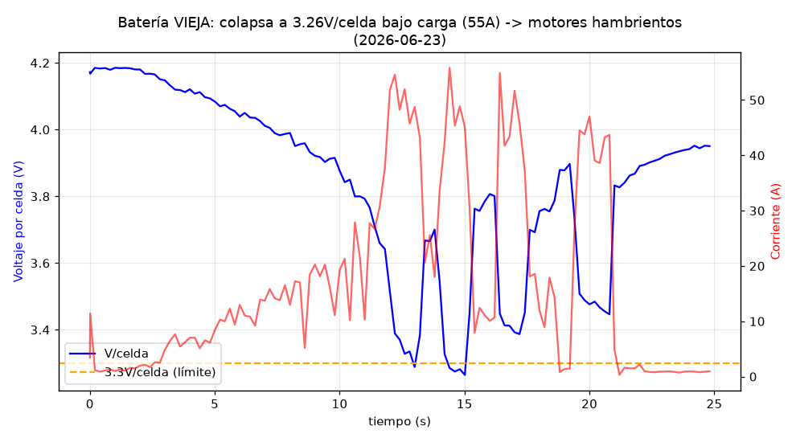
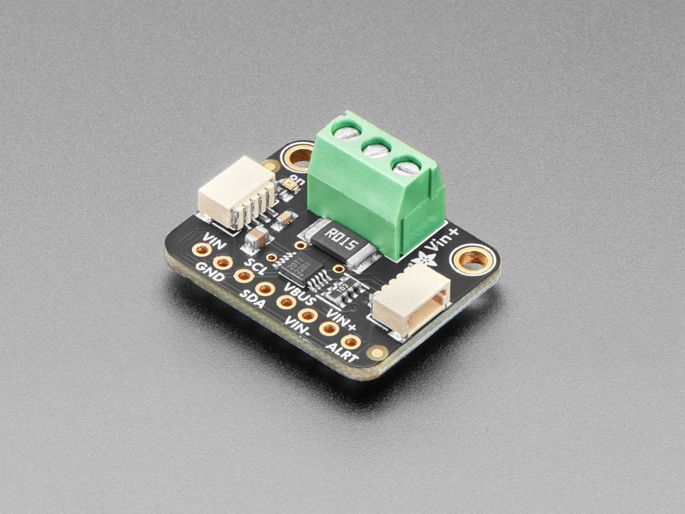
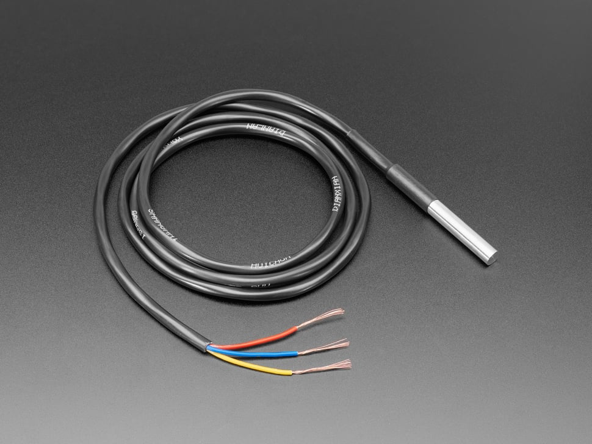
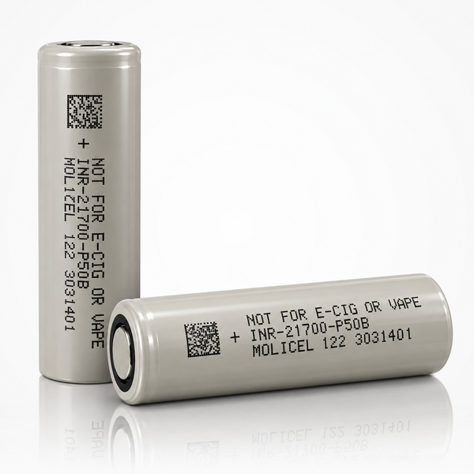
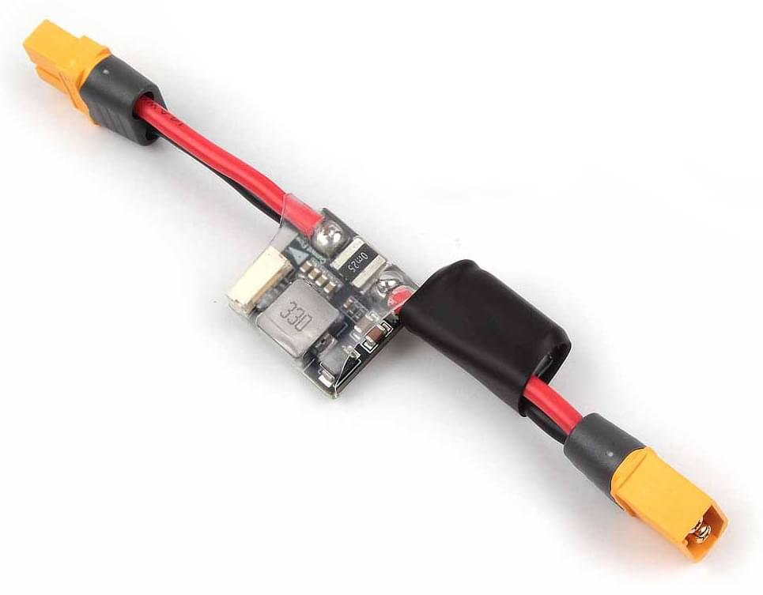

| Trabajo | Qué hace | Qué no hace |
|---|---|---|
| Motion-Specific Battery Health Assessment for Quadrotors (ICRA 2026) | Mide corriente en vuelo (S500 + Pixhawk 6C, 4S 2,2 Ah) y la reproduce en un modelo electroquímico. | La degradación es simulada; no valida en el pack; no dice cuántos vuelos; sin temperatura ni químicas. |
| Dibbern et al., JATE 2023 | ECM + EKF/UKF/culombios con perfiles de misión. Halla que el error de fin de descarga no sigue al error de SoC. | Datos de banco, no de vuelo. |
| SoH por ML en UAV (arXiv 2607.06791, 2026) | 342 + 289 vuelos, capacidad medida cada 10 vuelos. | Sin temperatura, sin modelo físico, una sola química. |
| Battery-aware predictive planning (arXiv 2609.12188, 2026) | Modelo de batería de orden reducido en el planificador. | Solo simulación; reconoce que el controlador cambia el compromiso energía-precisión pero no lo mide. |
| Guías LiPo vs Li-ion (fabricantes, 2025-2026) | "30-50 % más autonomía con Li-ion". | Ningún ensayo controlado en el mismo dron y la misma misión. |

27-oct-2026, vuelo de campo. PX4 marcó 0 % con 24,1 V reales (4,0 V/celda, ~75 %): el conteo de culombios integraba una corriente falsa del ESC. Al pasar a estimar por tensión, el porcentaje oscila con el sag bajo carga.
Lo que queremos responder:
BAT1_R_INTERNAL por química en PX4 para corregirlo?| Pack | 6S1P 4500 mAh 60C (×2) |
| Energía nominal | ~100 Wh |
| Masa | ~510 g |
| Descarga continua | 270 A |
| Resistencia interna | baja (mΩ por celda, a medir) |
| Uso típico | FPV, industrial pequeño |
| Pack | 6S1P Molicel P50B, 5000 mAh (×2) |
| Energía nominal | ~108 Wh |
| Masa | 6 × 70 g + montaje ≈ 460 g |
| Descarga continua | 60 A (45 A si P45B) |
| Resistencia interna | varias veces la de la LiPo (a medir) |
| Uso típico | long-range, industrial de autonomía |
Misma tensión, misma capacidad nominal y misma masa (±10 %): lo único que cambia es la química. Dos packs de cada para separar la variación pack-a-pack. Semi-sólido descartado (1-3 C continuos, no aguanta un pack de 4,5 Ah en este dron); LiHV no es química nueva; LiFePO4 no se usa en multirrotor.
BAT1_R_INTERNAL reduce el error del tiempo restante de PX4 de forma medible.| Estimador | Entrada | Qué le pasa en vuelo | Quién lo lleva |
|---|---|---|---|
| PX4 por tensión (serie) | Tensión del pack + compensación IR opcional (BAT1_R_INTERNAL) | Oscila con el sag; con R interna alta subestima mucho bajo carga. | Miles de drones PX4 |
| Conteo de culombios | Corriente calibrada integrada sobre la capacidad | Bueno si la capacidad real está al día; no ve la temperatura ni la energía no extraíble a alta corriente. | PX4 opcional, DJI, BMS |
| ECM + UKF (propuesto) | Tensión, corriente, temperatura, parámetros del circuito equivalente | Separa OCV de la caída IR; predice el fin de descarga bajo la carga real. | Literatura de baterías; aquí, en vuelo |




Imágenes de producto: Adafruit (INA228, DS18B20), 18650batterystore (P50B), documentación de PX4 (PM02). Solo ilustrativas; la referencia exacta se decide al comprar.
El dron vuela solo, comandado desde la Pi, con los mismos setpoints en cada vuelo. El RTK (2 mm en estático, cm en vuelo) hace que "el mismo setpoint" sea el mismo sitio físico. Cada vuelo termina por batería, no por tiempo: cuando la tensión de celda filtrada baja de 3,5 V bajo carga, el dron vuelve a la marca y aterriza. Eso es la verdad de terreno del tiempo restante.
| Factor | Niveles |
|---|---|
| Química | LiPo 4500 60C · Li-ion P50B (2 packs cada) |
| Perfil | Hover · Vertical · Horizontal |
| Repeticiones | ≥ 5 por celda, orden ABBA dentro de la sesión |
| Total | 30-40 vuelos hasta el corte, 4-6 sesiones de campo |
| Duración por vuelo | ~10-12 min (escalado del log 18 al pack de 4,5 Ah) |
Seguridad con Li-ion 1P: limitar el empuje máximo de PX4 a ~0,6 (sobra: 9,4 kg de empuje para ~1,5 kg) y perfiles suaves. Piloto con RC como respaldo en todo momento.
| # | Figura | Mensaje |
|---|---|---|
| F1 | Plataforma e instrumentación | Qué se mide, con qué, y los dos caminos de registro. |
| F2 | Trayectorias RTK de los tres perfiles, todos los vuelos superpuestos | Los perfiles son repetibles a nivel de cm: la variable es la batería, no el vuelo. |
| F3 | V, I y T de una descarga completa, LiPo y Li-ion lado a lado | La misma misión produce curvas distintas: sag, calentamiento y punto de corte. |
| F4 | R0 identificada en vuelo frente a HPPC de banco, por SoC y temperatura | ¿Se puede caracterizar la batería desde los logs sin laboratorio? (H3) |
| F5 | Error del tiempo restante frente al horizonte, por estimador y química | La figura central: cuánto se equivoca el piloto y con qué estimador deja de equivocarse. (H2) |
| F6 | Wh utilizables en vuelo frente a Wh de banco, por química y perfil | Qué deja sin usar el corte por tensión. (H1) |
| F7 | Autonomía en minutos y en minutos por gramo | El número que todo el mundo cita sin medir, medido. |
| F8 | Capacidad de referencia a lo largo de la campaña | Fade en 30-40 vuelos; se reporta, no se promete. |
| Semanas | Hito | Estado |
|---|---|---|
| 0 | Compra: 2 LiPo 4500 60C, 2 Li-ion P50B con balance lead, INA228, shunt 1 mΩ 100 A, 2 DS18B20, pinza DC, anemómetro. | pendiente |
| 1-2 | Instrumentación en el dron, nodos en la Pi, calibración en banco sin hélices, prueba 0 de hover Offboard outdoor con RTK. | pendiente |
| 2-3 | Banco de los cuatro packs (OCV, HPPC, capacidad). | energía |
| 3-6 | Campaña: 4-6 sesiones, 30-40 vuelos hasta el corte. | campo |
| 6-9 | Identificación, estimadores, figuras. | ambos |
| 9-12 | Redacción y envío. | ambos |
Venues: Journal of Energy Storage o Energies (ángulo batería); Drones o Aerospace Science and Technology (ángulo UAV); IEEE Trans. Transportation Electrification. El dataset, aparte, en Scientific Data o Data in Brief.
Riesgos: (1) "el ECM de LiPo ya está estudiado": la defensa es el régimen de 3-15 C, la identificación desde vuelo, la verdad de terreno y las dos químicas en el mismo dron. (2) Fade pequeño en 30-40 vuelos: se reporta, no se promete SoH. (3) Viento: anemómetro por vuelo, descartar rachas, orden ABBA.
Segundo paper con la misma instrumentación: energía por misión del controlador (PID, jerk acotado y MPC, ya implementados en la Pi) con el frente de Pareto precisión-energía medido en campo; los ahorros publicados (7-70 %) son todos simulados.
Motion-Specific Battery Health Assessment for Quadrotors, ICRA 2026 · arxiv.org/abs/2603.12791
Dibbern et al., load-dependent SoC and end of discharge of a multirotor battery, JATE 12(2), 2023
Battery-Aware Predictive Trajectory Planning for Multirotors, 2026 · arxiv.org/abs/2609.12188
ML-based battery SoH prediction for UAV maintenance, 2026 · arxiv.org/abs/2607.06791
Rodrigues et al., DJI M100 energy dataset, Sci. Data 2021 · Bills et al., eVTOL battery dataset, Sci. Data 2023
Revisión completa y decisiones: docs/publicaciones/2026-10-29_paper_energia_bateria_campo.md (repo px4_drone_dev)